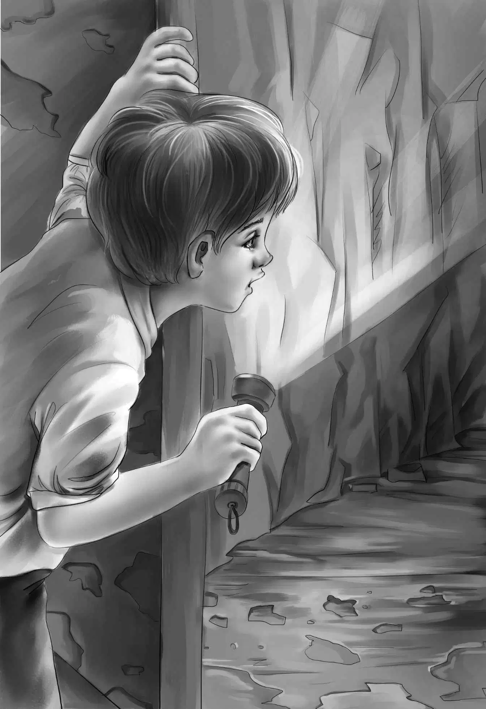

"Oh,tell us what you see!" begged Jessie."Can't we come down,too?"
"I wouldn't,Jessie," said Henry looking up. "It's so dirty. We'll look very carefully and tell you everything."
Benny had crawled through the little door with the light. "The very same things!" he shouted. "A milking stool and an old candlestick and some more iron boxes! We'll bring them all up."
"How big is the hole?" called Violet.
"Just big enough for two people to sit down. You can't stand up," Benny called back."Oh,boy! Here is an old plate! And here's an old cup! All broken!"
His voice sounded strange and far away,but they could tell how excited Benny was.

"Hand them to me,old fellow," said Henry."And you let me have a turn in there."
Benny crawled out and Henry crawled in.
"Find anything,Henry?" called Jessie.
"Well,yes!This seems to be a spoon. An awfully old spoon. Somebody ate in here all right."
But that was all. Henry handed the things up to the girls. Jessie gave him a box to step on and the boys jumped out of the hole.
Henry took some things and started for the kitchen. There was Sam,sitting on the cellar stairs.
"Well,Sam," said Henry. "How long have you been here?"
"Ever since you came down," said Sam. "Your aunt told me to."
"But we weren't in any danger in our own cellar," said Henry."Sometimes Aunt Jane treats us like little children."
Sam grinned a bit and said,"To tell the truth,I guess I want to know what's going on. I'll help you carry that stuff outdoors."
Soon everything was spread out on the grass in front of Aunt Jane.
The boxes held gunpowder and bullets. There were no guns this time. Aunt Jane looked at everything. She said,"Now,we know a little bit more. This plate is over two hundred years old. And we know there were two hiding places."
"Why should people want to hide?"asked Benny."They just wanted to hide their ammunition."
"Yes,Benny," Violet said."But you see the Redcoats wanted to catch the men,too. I'm sure someone hid in both these caves. Someone sat on that milking stool and ate from that plate."
"Good for you,Violet," said Henry,smiling. "I'm sure you are right."
Then he said to Aunt Jane,"Let me tell you about that door in the potato pit. I would never have dreamed there was a door if I hadn't been looking for one. A very clever man made that door. First it was made of wood,but the edges were not straight.They were curved to look like stones. Then the plaster was put on to look like stones,too. It took a long time to make that door."
"Yes,Henry," said Aunt Jane."Think of all those years when your grandfather and I lived here as children. Nobody ever found that door. And we used to play hide and seek in that hole. We poured potatoes into it and hid in the potatoes."
"I wonder if Grandfather would have any ideas," said Jessie slowly."I know he had to go back to work. But he might remember something."
Everyone looked thoughtful for a moment.
"Oh,I'm all tired out thinking!" cried Aunt Jane suddenly. "It must be suppertime." She looked tired and almost as if she were going to cry.
"Dear Aunt Jane!" cried Violet. "This is too exciting for you. I'll tell Maggie to get supper right away. I'll help her."
"So will I," said Jessie quietly."We'll get supper in two shakes."
The three worked as fast as they could to get supper on the table. In no time,Maggie went to get Aunt Jane.
"We have your favorite things,Miss Jane," she said."Chicken salad and hot rolls and early asparagus."
"And a cup of good strong tea,I hope," said Aunt Jane.
"Yes,sure enough,a cup of good strong tea," said Maggie. She helped Aunt Jane into her chair at the table. Maggie was a bit worried. She said so to Jessie when they were getting supper."Your Aunt Jane must be getting too tired. She doesn't ever speak quickly like that any more."
"We'll be more careful of her," said Jessie."We mustn't upset Aunt Jane."
"Maybe all this talk is too much for her," said Violet."You must remember that once upon a time she really loved Andy Bean."
"I suppose she did," said Maggie."But that was a long time ago."
"But this brings it back," said Violet quietly.
Aunt Jane ate her supper well and drank her tea. As the family finished eating,they heard a voice talking to Maggie in the kitchen.
"It's only Willie," Henry said. "He must be selling Maggie some more asparagus."
"Good," said Benny. "I hope she will buy it."
Benny had not heard the talk about Aunt Jane. He went on now with his own ideas. "But to go back to Andy Bean. Mr. Cole said there was a written story somewhere. Where do you suppose that story ever went? And what did it say? And where did Andy get it?"
Suddenly Aunt Jane's cheeks looked bright pink. She spoke quickly and,for her,quite loudly. It was hard for the children to tell whether she was angry or just tired.
"Andy Bean!" she exclaimed."All the trouble he's made! Running away and all. I'd like to shoot Andy Bean!"
Everyone turned in surprise toward Aunt Jane. She had not sounded like this for a long,long time.
Henry was by her side in a second. "Don't you worry any more,Aunt Jane!" he said in a loving voice."Come on,I'll carry you to bed!"
"No,Henry! Really,I'm all right."
But Jessie and Violet and Maggie rushed over to her. Henry lifted his tiny aunt very easily and carried her to bed. By that time she was laughing.
"I'm so sorry," she said. "I just got to thinking how nice it would have been if Andy hadn't run away!"
"It's all right,Miss Jane," said Maggie."Put on your very best lacy nightdress and you'll go to sleep early."
Maggie sat by Aunt Jane until she fell asleep.
Benny and Henry bought the asparagus and paid Willie.
"Did you work for Andy Bean's father?" asked Benny.
"Yep."
"Don't bother Willie. He couldn't have been more than a boy then," Henry said to his brother."Just put the asparagus in the refrigerator. Then we'll go outdoors and talk all we want. I hope tomorrow Aunt Jane will be herself again."